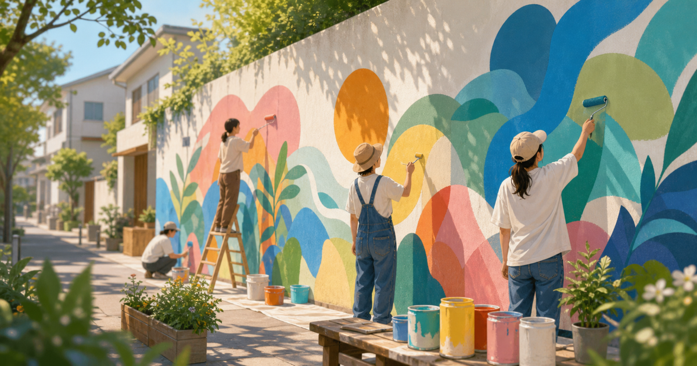
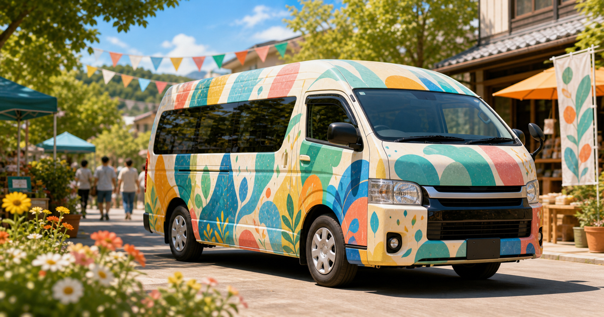
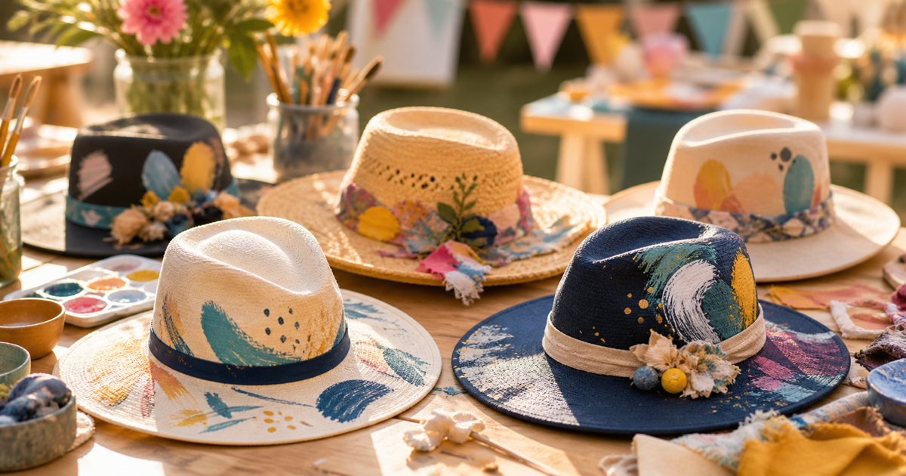

ウォールアート
まちの壁や空間に、応援の記憶を残します。
レボアート応募受付
地域の有志と一緒に、ウォールアート、カーアート、ハットアートとして想いを街に残す企画に応募できます。
ペンキや制作面の相談、認定アーティストとの連携候補、公開後の活動紹介まで、応募内容をもとに運営が確認しながらサポートします。

まちの壁や空間に、応援の記憶を残します。

走るたびに、想いが地域へ広がります。

身につける表現として、応援を届けます。
レボアートは、地域や活動の想いをアートで見える形にする取り組みです。描いて終わりではなく、制作過程や完成後の活動を発信しながら、応援の輪を広げていきます。
最低3名以上の有志が集まり、地域や活動の想いを形にします。
SNSや活動報告で、アートスポットの変化や応援の広がりを継続的に伝えます。
壁、車、帽子など、公開できる対象物を応援のメディアとして活用します。
ペンキや材料、制作手順、認定アーティストとの連携候補を運営と整理できます。
制作過程、完成後の様子、地域での反応をSNSや活動報告として継続的に発信します。
応募内容を確認したうえで、実施に向けた準備や公開後の見せ方を整理します。すべてが確約されるものではありませんが、実現に向けて必要な確認を一緒に進めます。
アートを行う最低3名以上の有志が集まっていること。
壁、車、帽子など、アートを行う場所や対象物の許可・相談先を確認できること。
定期的にSNSや活動報告で、制作過程やアートスポットの様子を発信できること。
掲載できる地域、写真、活動内容を運営と確認し、公開許可済みの範囲で紹介できること。
応募内容を運営サイドで確認し、必要な条件や公開範囲を整理します。その後、抽選・決定を経て、プロジェクトとして始まったものだけを当選レボアートスポットとして扱います。
ウォールアート、カーアート、ハットアートは応募カテゴリです。どれも有志の体制、実施対象、発信計画、公開範囲を確認しながら進めます。
ここでは一部の登録済みレボアートを表示します。一覧ページでは、実際に始まったレボアートをまとめて確認できます。
フォームからレボアートの応募内容を送ります。
有志の体制、場所、材料、公開範囲を確認します。
応募内容をもとに運営確認・抽選・決定します。
制作過程や活動報告をSNSなどで継続的に発信します。
公開許可済みのスポットとして一覧や全国応援Mapへ掲載します。
起案者、スパーカー、ブースター、認定アーティスト、レボアートスポットの広がりを、公開許可済みの地域情報で表示します。
詳細住所や連絡先は表示せず、市町村レベルの公開情報だけを扱います。
3名以上の有志、実施対象、発信計画が見えてきたら応募してください。運営確認・抽選・決定を経て、公開許可済みのレボアートスポットを順次掲載します。
レボアートに応募する 認定アーティストを見るこのページでは、レボアートの応募受付と当選レボアートスポット掲載の流れを確認できます。決済導線、外部SNS投稿フォーム、外部地図サービスは設置していません。